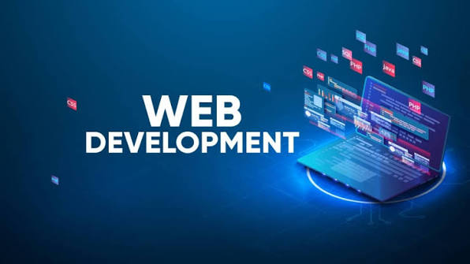

My First Blog Post and My Journey into Web Development
October 6th, 2026 by Lawrey Layne
This is my blog post about my journey into web development and how I began this journey with little knowledge of HTML and CSS.
Although I have much to learn, I am excited about the possibilities of web development.
The skills I would learn would not only enhance my understanding but allow me to upgrade my island's technological standing
As I need more text for this to wrap properly, I will continue to add more content to this blog post. My favorite football team is Liverpool and I support them wholeheartedly.My favorite anime is Naruto Shippuden and my favoruite anime protaganist is Lelouch.
My Second Blog Post
October 7th, 2026 by Lawrey Layne

This is my second blog post about my experiences in web development.
Lab 2 has been very informative and fun for me to do as it eases me into more
aspects of web development.
I am excited to continue learning and improving my web development skills and hope to become a proficient web developer.
As I continue my journey in web development, I look forward to creating more engaging and user-friendly websites.
Now here are my random thoughts:
My most hated anime cliche is when the main character is weak for the first eleven episodes and then all of a sudden he gains the courage for one monet and reverts back to his weak state right after the deed is doone
It really annoys me when that happens as the main character is usually overpowered